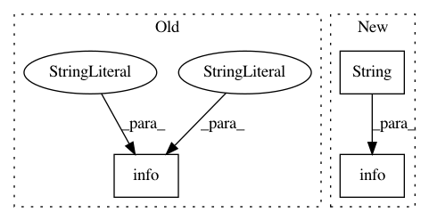

fb5d49ee143bf28d78968f5065f8e2f449b3c55b,ml/rl/test/constant_reward/test_constant_reward.py,TestConstantReward,test_trainer_maxq,#TestConstantReward#,28
Before Change
logger.info("Training..", epoch)
for tdp in tdps:
maxq_trainer.train_numpy(tdp, None)
logger.info("Training epoch", epoch, "average q values",
np.mean(workspace.FetchBlob(maxq_trainer.q_score_output)),
"td_loss", workspace.FetchBlob(maxq_trainer.loss_blob))
// Q value should converge to very close to 100
avg_q_value_after_training = np.mean(
workspace.FetchBlob(maxq_trainer.q_score_output))
After Change
logger.info("Training.. " + str(epoch))
for tdp in tdps:
maxq_trainer.train_numpy(tdp, None)
logger.info(
" ".join(
[
"Training epoch",
str(epoch),
"average q values",
str(np.mean(workspace.FetchBlob(maxq_trainer.q_score_output))),
"td_loss",
str(workspace.FetchBlob(maxq_trainer.loss_blob)),
]
)
)
// Q value should converge to very close to 100
avg_q_value_after_training = np.mean(
workspace.FetchBlob(maxq_trainer.q_score_output)
In pattern: SUPERPATTERN
Frequency: 3
Non-data size: 3
Instances
Project Name: facebookresearch/Horizon
Commit Name: fb5d49ee143bf28d78968f5065f8e2f449b3c55b
Time: 2018-07-14
Author: jjg@fb.com
File Name: ml/rl/test/constant_reward/test_constant_reward.py
Class Name: TestConstantReward
Method Name: test_trainer_maxq
Project Name: deepgram/kur
Commit Name: 5fb1218c41e5abada3dcfe28315853de04fd8ac7
Time: 2016-11-28
Author: ajsyp@syptech.net
File Name: kur/providers/provider.py
Class Name: Provider
Method Name: __init__
Project Name: scikit-multiflow/scikit-multiflow
Commit Name: e595106642dcd48e43263a0391562ac2dcfdd846
Time: 2017-06-15
Author: guilhermekmatsumoto@gmail.com
File Name: skmultiflow/evaluation/EvaluatePrequential.py
Class Name: EvaluatePrequential
Method Name: train_and_test